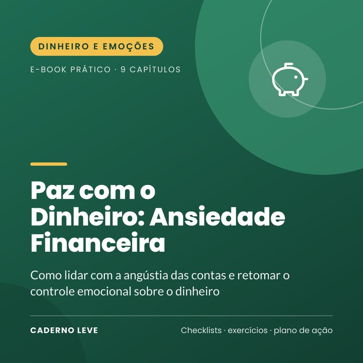

Paz com o Dinheiro: Ansiedade Financeira
Como lidar com a angústia das contas e retomar o controle emocional sobre o dinheiro: raio-x com calma, orçamento do essencial, negociação e cuidado com a mente.
O link de compra deste e-book ainda está sendo configurado na Kiwify.
Pagamento seguro e entrega do PDF pela Kiwify
O coração aperta quando chega uma notificação do banco? Você não está sozinho(a), e dá para sair do modo de alarme.
O Paz com o Dinheiro: Ansiedade Financeira é um e-book prático e acolhedor, em linguagem simples, para quem vive com medo das contas, evita olhar o saldo ou perde o sono por causa de dívidas.
Você entende como a escassez afeta a mente, aprende a olhar os números com calma, organiza o orçamento do essencial, prioriza e negocia dívidas com segurança, conhece seus direitos (como a Lei do Superendividamento), revê suas crenças sobre dinheiro, conversa com a família e cuida da mente durante o aperto.
O que você vai conquistar
- Entender a ansiedade financeira sem culpa
- Olhar a situação real com calma e em etapas
- Proteger o essencial no aperto
- Priorizar e negociar dívidas com segurança
- Rever crenças sobre dinheiro
- Cuidar da mente enquanto a situação melhora
O que tem dentro
- Capítulo 1Quando o dinheiro tira o sono
- Capítulo 2A mente na escassez
- Capítulo 3Parar de fugir: olhar os números
- Capítulo 4O orçamento do essencial
- Capítulo 5Dívidas: prioridades e negociação
- Capítulo 6Suas crenças sobre dinheiro
- Capítulo 7Conversando sobre dinheiro
- Capítulo 8Cuidando da mente no aperto
- Capítulo 9Pequenas seguranças
- ExtraResumo e plano de ação para colocar em prática
- ExtraFolha de trabalho e checklist para imprimir
Para quem é
- Quem tem dívidas e sente angústia com as contas
- Quem evita olhar extratos e faturas
- Casais e famílias que brigam por dinheiro
Para quem não é
- Não é consultoria financeira, jurídica ou contábil
- Não garante descontos, aprovação de acordos ou resultados
- Não substitui acompanhamento psicológico
Bônus: Folha “Raio-x e plano” para imprimir — orçamento do mês, lista de dívidas e termômetro da ansiedade.
Aviso importante
Este e-book tem caráter educativo e de autocuidado. Ele não substitui psicoterapia nem acompanhamento médico e não é consultoria financeira, jurídica ou contábil; não garante descontos, prazos ou resultados. Antes de assinar acordos, confira as condições e, se precisar, busque o Procon, a Defensoria Pública ou um profissional de confiança. Se o sofrimento estiver intenso, procure um(a) psicólogo(a) ou a Unidade Básica de Saúde (UBS).
Se você precisar conversar agora, o CVV atende de graça, 24h, no 188 ou em cvv.org.br. Em emergência, ligue SAMU 192.